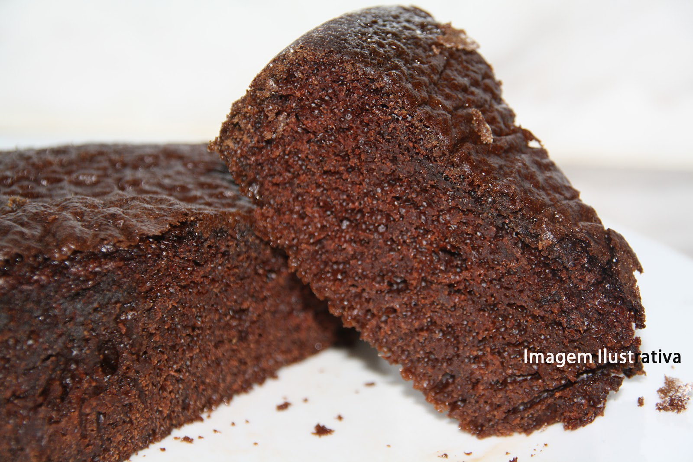

Receita de Bolo de Chocolate
Ingredientes
- 2 xícaras de farinha de trigo
- 2 xícaras de açúcar
- 1 xícara de chocolate em pó
- 1 xícara de óleo
- 2 xícaras de água fervente
- 2 ovos
- 1 colher de sopa de fermento em pó

Modo de Preparo
- Preaqueça o forno a 180ºC.
- Em uma tigela, misture a farinha, o açúcar e o chocolate em pó.
- Adicione o óleo, a água fervente e os ovos, misturando bem.
- Por último, acrescente o fermento e misture delicadamente.
- Despeje a massa em uma forma untada e enfarinhada.
- Asse por aproximadamente 40 minutos ou até que um palito inserido no centro do bolo saia limpo.
- Deixe esfriar antes de desenformar e servir.